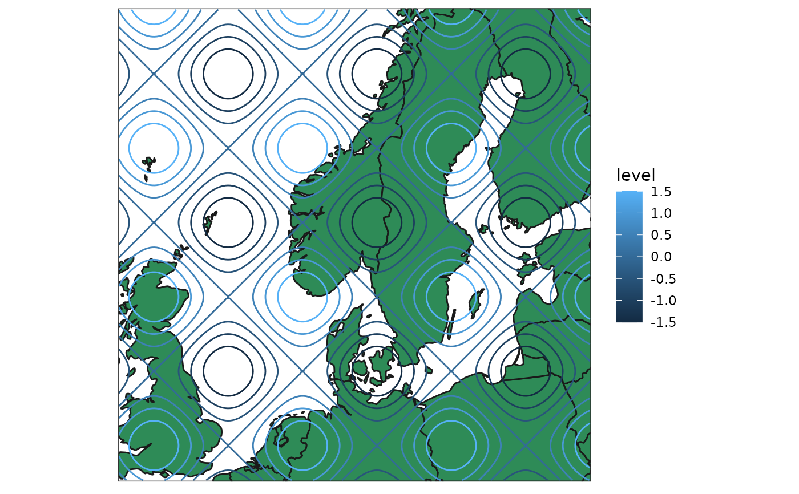
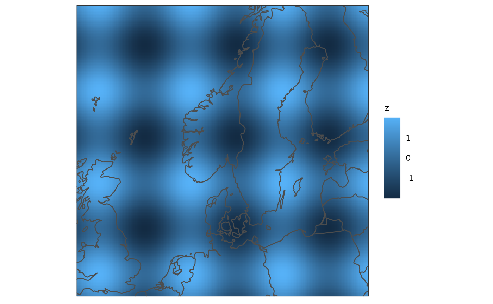

Given a specific domain, a map is returned on that domain. The function is
intended to be used in conjunction with geom_geocontour and /
or geom_georaster when plotting using ggplot().
Arguments
- dom
A
geodomainorgeofield- map
The map database from which to get the map data. The default is
world. Datasets from thernaturalearthpackage may also be used, but only paths will be returned.- polygon
Logical. Whether to return the data as polygons (
TRUE), or paths (FALSE). The default is for polygons to be returned.- ...
Not used.
Examples
# Define a domain and make some data
arr <- array(dim = c(200, 200))
for (i in 1:200) {
for (j in 1:200) {
arr[i, j] <- sin(i / 10) + sin(j / 10)
}
}
dom <- define_domain(10, 60, 200, 10000)
geo <- geofield(arr, domain = dom)
data <- data.frame(geo = geolist(geo))
# Use polygons
map <- get_map(geo)
ggplot() +
geom_polygon(
aes(x, y, group = group), map,
fill = "seagreen", colour = "grey10"
) +
geom_geocontour(aes(geofield = geo, colour = after_stat(level)), data) +
coord_equal(expand = FALSE) +
theme_harp_map()

# Use paths
map <- get_map(geo, polygon = FALSE)
ggplot() +
geom_georaster(aes(geofield = geo), data) +
geom_path(aes(x, y), map, colour = "grey30") +
coord_equal(expand = FALSE) +
theme_harp_map()
